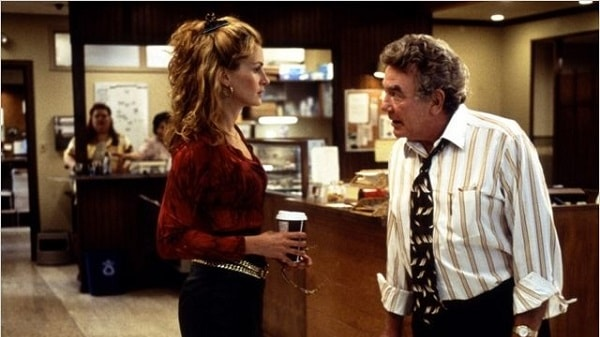

Business Law and Management graduate
Passionate about cinema, I regularly publish movies' reviews on my website : Itinéraire d'une cinéphile
Currently working on a website's project where people can rate and comment concerts : Clapee
|  |
Erin BrockovichA travers cette oeuvre captivante, admirablement bien filmée, Steven Soderbergh nous dévoile ses talents de cinéaste et son sens du détail. Au sommet de son art, Julia Roberts signe le meilleur rôle de sa carrière, qui lui valut l’Oscar de la meilleure actrice. Ma critique ici |
Rain ManL’aventure de Charlie et Raymond Babbitt est un plaisir à suivre du début à la fin. On apprécie la fluidité de ce récit désormais culte, et l’humour qu’il renferme malgré la gravité de la situation. Le tout est rythmé par une bande originale grandiose composée par le grand Hans Zimmer. Ma critique ici |
|
GhostlandAuréolé du Grand Prix lors festival du film fantastique de Gérardmer, « Ghostland » est un film d’horreur glaçant, malsain et terriblement oppressant qui ne laisse aucun répit à ses spectateurs. Le récit est ponctué de jump scares incroyablement efficaces, qui achèvent d’affoler notre rythme cardiaque. Ma critique ici |
I coded this page during Le Wagon's 9-week coding bootcamp in Paris.
You can find me on social media: